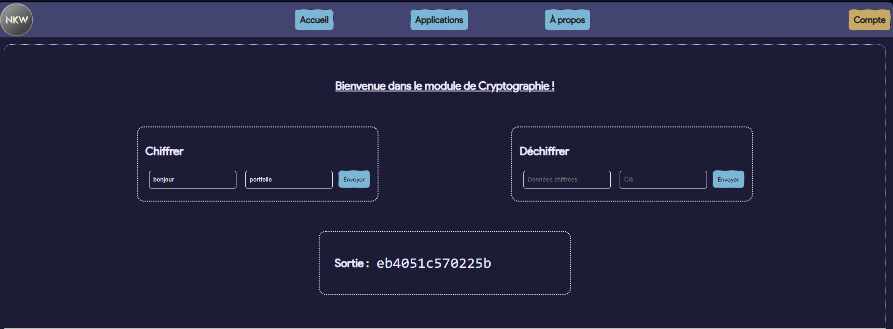
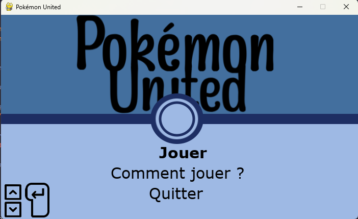
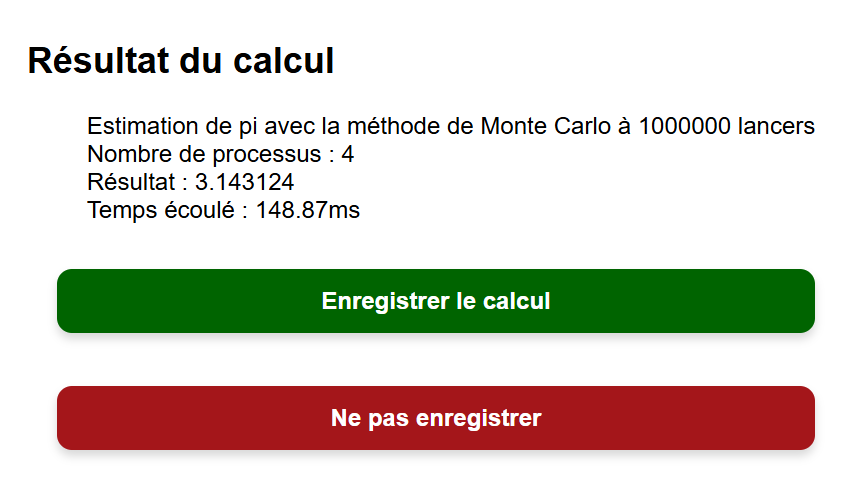

SAE Site web de 2ème année
Etudiant en BUT Informatique, je suis sujet à plusieurs projets en autonomie nommés SAE et imposés par nos professeurs afin de mettre en application nos compétences et développer notre autonomie.
Dans le cadre d'une de ces SAE, des collègues et moi avons conceptualisé et réalisé un site web composé de différents modules mathématiques ou cryptographiques selon les attentes de nos professeurs.
Dans ce cadre, j'étais principalement chargé de la documentation et de la recherche d'informations nécessaires pour la réalisation des différents modules, mais j'étais également chargé de l'optimisation et de la correction de certains processus et certaines fonctions PHP ou JavaScript.
A ce jour, j'estime que le site est visuellement et fonctionnellement réussi, tout en ayant répondu à toutes les exigences fonctionnelles attendues par nos professeurs. Ce projet m'a permis de développer mes compétences en développement web, en base de données et en travail d'équipe tout en apprenant à mieux gérer mon temps et mes priorités dans le cadre d'un projet.


Simulateur de combats "Pokémon"
Au cours de mon année de terminale au lycée, notre professeur de NSI (Numérique et Sciences Informatiques) nous confiait parfois des projets à réaliser en fonction des compétences apprises récemment afin de démontrer notre compréhension de ces dernières.
Dans le cadre de l'un de ces projets, un ami et moi avons décidé de créer un simulateur de combats inspiré de l'univers Pokémon en Python, en utilisant la librairie Pygame pour la partie graphique et une base de données SQLite pour stocker les différentes données nécessaires au fonctionnement du projet.
Tandis que mon ami était chargé de la réalisation des sprites (images) et de la base de données, j'étais chargé du fonctionnement de l'application, m'occupant du système de combat incluant la mécanique de type, de PP (permettant de limiter l'usage d'attaques) et du système de vie
Ce projet, étant l'un de mes premiers projets, n'est pas complet en termes de fidélité et de qualité, mais notre professeur a été impressionné par la qualité de notre travail et notre rigueur.
SAE parallélisme et calcul distribué de 3ème année
Au cours de ma troisième année de BUT Informatique, une nouvelle SAE nous a été confiée pour mettre en application l'ensemble des compétences acquises au cours de notre formation.
Dans le cadre de cette dernière, des collègues et moi devions mettre en place plusieurs algorithmes de calcul parallèle ainsi qu'une plateforme web pour les mettre en exécution. Nous devions donc effectuer toutes les étapes du cycle de vie d'un logiciels, de l'analyse des besoins à la maintenance en passant par la conception, le développement et les tests. Les modules étaient spécifiés au fur et à mesure par les professeurs, nous laissant une grande liberté dans la manière de les implémenter et de les organiser.
Dans ce projet, j'étais principalement chargé de la mise en place du back-end et des algorithmes de calcul parallèle, mais j'ai également participé à la conception de la base de données.
A ce jour, j'estime que le site est visuellement et fonctionnellement réussi, mais il y a encore des améliorations à faire, principalement concernant les besoins attendus, parfois mal réalisés suite à des incompréhensions de notre part. Ce projet m'a permis de développer mes compétences en programmation parallèle et distribuée ainsi que mon aptitude au travail d'équipe, tout en mettant oeuvre mes compétences en base de données et en PHP.
